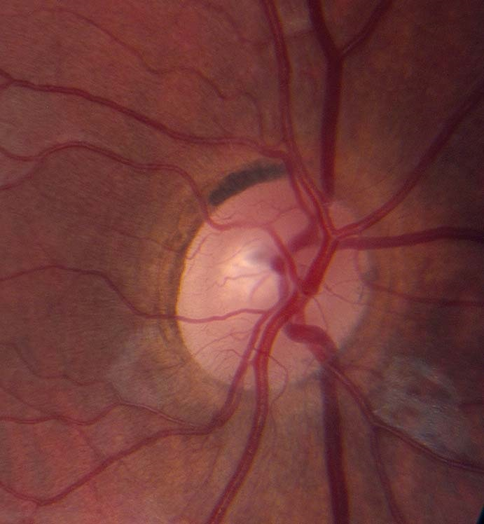
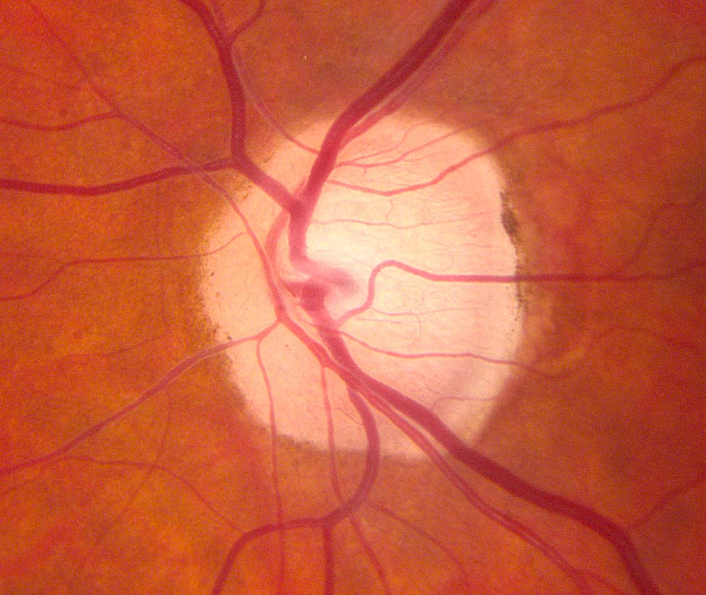
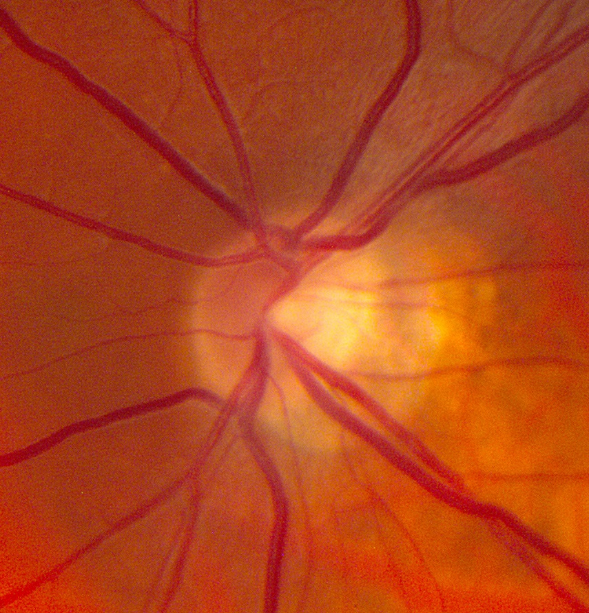
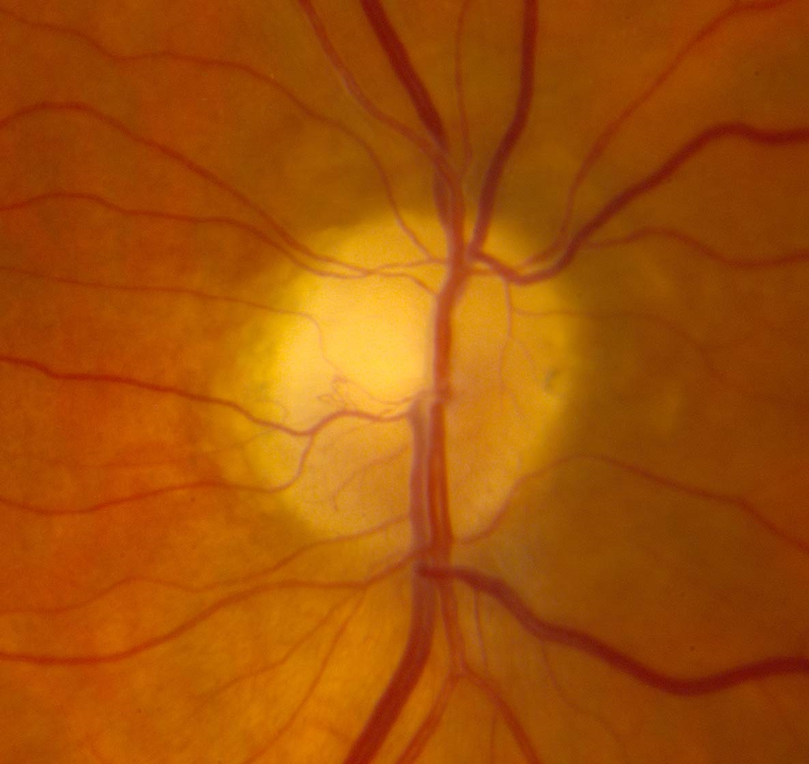
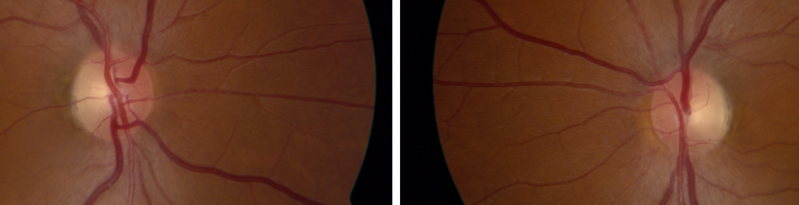

The Pale Optic Disc
- Pale optic disc as viewed by ophthalmoscopy
- Reflects death of optic nerve axons
- Common causes: any type of optic neuropathy or extensive inner retinopathy
-
Normal optic disc that appears pale by ophthalmoscopy
- Less prominent optic disc capillaries
- Pseudophakia eliminates the brownish tint of the native lens in older adults
- Tilting of the optic disc in myopia creates temporal optic disc pallor




- To differentiate optic disc pallor from normal, correlate with visual function measures and other neuro-ophthalmic abnormalities
-
Look for the following characteristic distributions of optic disc pallor
- Superior or inferior optic disc pallor: suggests segmental infarction in ischemic optic neuropathy
- Symmetrical temporal optic disc pallor in both eyes: suggests toxic/metabolic/hereditary optic neuropathy
-
Trap: ophthalmoscopy alone is often insufficient to determine the cause of optic disc pallor


- Optic disc pallor is merely a sign of optic nerve axon loss, which can result from disease in the inner retina, optic nerve, optic chiasm, optic tract, or lateral geniculate body
-
Trap: lesions of the inner retina, optic nerve, optic chiasm, optic tract, or lateral geniculate bodies can exist without causing optic disc pallor, especially if the insult is mild or recent
-
Tip: optical coherence tomography may assist in confirming atrophy of the optic disc or inner retina
- Retrobulbar imaging is often indicated to determine the cause of optic disc pallor